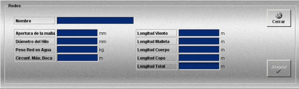

Redes
La creación y edición de redes se realiza mediante la siguiente ventana.

Esta ventana permite definir la red de arrastre que podrá ser añadida a los artes de arrastre definidos.
Se definen los siguientes datos:
Nombre: Nombre de la red.
Formato: caracteres alfanuméricos.
Apertura de la Malla: Tamaño del agujero de la malla.
Unidades: milímetros
Rango: 0.00- 300.00
Diámetro del Hilo: Diámetro del hilo de la malla.
Unidades: milímetros
Rango: 0.00- 50.00
Peso Red en Agua: Peso de la red en el agua.
Unidades: kilogramos
Rango: 0.00- 1000.00
Circunf. Máx. Boca: Diámetro de la circunferencia máxima de la boca.
Unidades: metros
Rango: 0.00- 300.00
Longitud Malleta: Esta longitud se especifica en el esquema que se muestra al final de este apartado.
Unidades: metros
Rango: 0.00- 300.00
Longitud Viento: Esta longitud se especifica en el esquema que se muestra al final de este apartado.
Unidades: metros
Rango: 0.00- 200.00
Longitud Cuerpo: Esta longitud se especifica en el esquema que se muestra al final de este apartado.
Unidades: metros
Rango: 0.00- 200.00
Longitud Copo: Esta longitud se especifica en el esquema que se muestra al final de este apartado.
Unidades: metros
Rango: 0.00- 200.00
Longitud Total: Este campo no es modificable. Presenta el valor de la longitud total de la red, que es la suma de los valores de longitud de viento, malleta, cuerpo y copo.
Unidades: metros